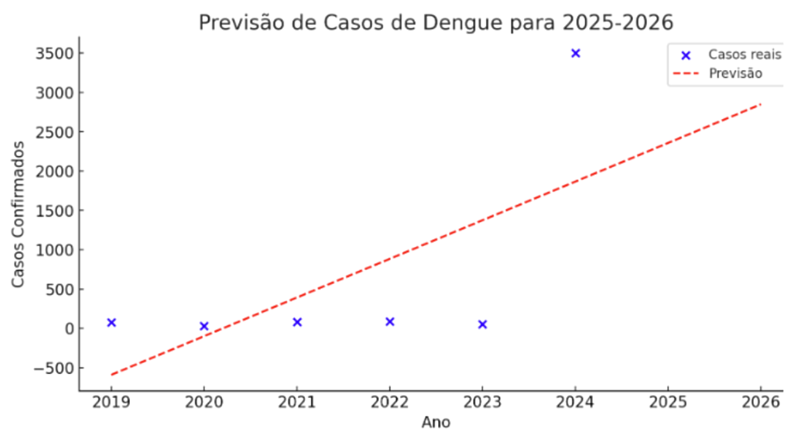
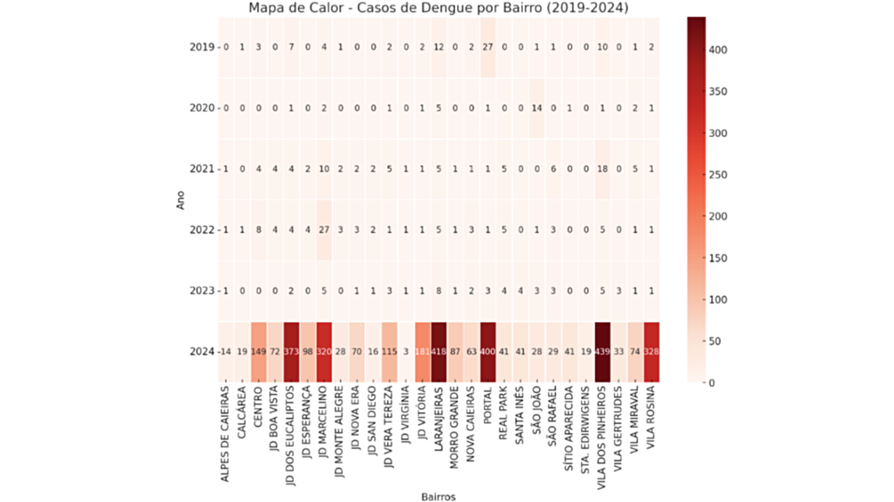

O mapa de previsão baseia-se em análises matemáticas e estatísticas para estimar as condições climáticas futuras. Ele utiliza dados históricos e variáveis atmosféricas para projetar temperaturas e precipitações dos próximos meses. Ressalva: É fundamental entender que essas previsões são estimativas e não garantem precisão absoluta, pois condições imprevistas podem alterar o cenário real.
Análise e Recomendações Diante do aumento dos casos de dengue, especialmente em áreas de baixa renda e alta densidade demográfica, recomenda-se: Análise Aérea: Utilizar mapeamento aéreo por meio de drones ou imagens de satélite para identificar com precisão as áreas mais críticas. Essa abordagem supera as limitações do uso exclusivo do fumacê, que atua de forma paliativa. Erradicação da Raiz do Problema: A prevenção efetiva deve focar na erradicação dos fatores estruturais que favorecem a proliferação do Aedes aegypti, como a falta de saneamento básico, acúmulo de água parada e condições precárias de moradia, ao invés de depender somente do fumacê.
| Mês | Temperatura Mínima (°C) | Temperatura Máxima (°C) | Precipitação (mm) |
|---|---|---|---|
| Janeiro | 18 | 27 | 270 |
| Fevereiro | 18 | 27 | 197 |
| Março | 18 | 26 | 167 |
| Abril | 16 | 25 | 78 |
| Maio | 13 | 22 | 69 |
| Junho | 12 | 22 | 49 |
| Julho | 11 | 22 | 51 |
| Agosto | 12 | 23 | 37 |
| Setembro | 14 | 25 | 93 |
| Outubro | 16 | 26 | 140 |
| Novembro | 16 | 25 | 174 |
| Dezembro | 18 | 26 | 212 |
Resumo dos Dados Meteorológicos e Impacto na Dengue Temperaturas e Precipitação: Em Caieiras, as médias históricas indicam que os meses de verão (dezembro, janeiro e fevereiro) são os mais quentes, com temperaturas máximas entre 26°C e 27°C e alta precipitação (até 270 mm em janeiro). Os meses de inverno (junho a agosto) são mais frios, com mínimas entre 11°C e 12°C e menor volume de chuvas (37 a 51 mm). Impacto na Dengue: As condições quentes e chuvosas do verão favorecem a proliferação do mosquito Aedes aegypti, vetor de dengue, zika e chikungunya. Fatores como o fenômeno El Niño, a reintrodução de sorotipos do vírus, a expansão geográfica do mosquito e diagnósticos mais eficientes contribuíram para o aumento dos casos de dengue entre 2022 e 2024. Fatores Socioeconômicos e Densidade Demográfica: Observou-se que o aumento dos casos se concentrou em áreas onde o PIB per capita é inferior a 5 salários mínimos e onde a densidade demográfica é maior. Essas condições refletem vulnerabilidade social e infraestrutura precária, fatores que potencializam a proliferação do mosquito e a disseminação da doença.